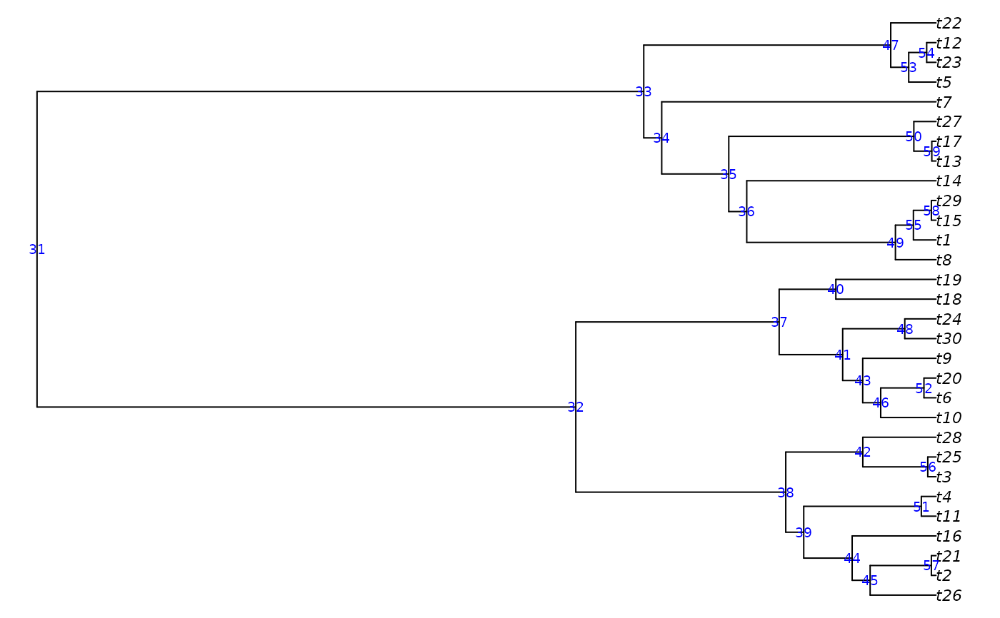

Convert the MRCA node IDs of a missing_taxa_list into tips
Source: R/convert_nodes_to_tips.R
convert_nodes_to_tips.RdClades (target clades, sister clades, and excluded subclades) of a missing_taxa_list can be defined by tips
or by the ID of the node of the backbone phylogeny they correspond to.
This function converts all the node IDs into tips, so that the list has the tips-only format required by
phylograftR::graft_missing_taxa() and phylograftR::graft_missing_clades().
Tips and node IDs can be mixed, within the list and within the items. The conversions are printed for transparency:
the warnings and errors of the grafting functions then refer to tips that can be traced back to the node IDs provided.
The same conversion is done internally by phylograftR::build_missing_taxa_list()
and phylograftR::import_missing_taxa_list() when a table includes node IDs.
Usage
convert_nodes_to_tips(
missing_taxa_list,
phy,
total_richness_per_clades = NULL,
verbose = TRUE
)Arguments
- missing_taxa_list
A list with the information on the taxa to graft, as in
phylograftR::graft_missing_taxa()orphylograftR::graft_missing_clades(), except that clades can be defined by node IDs. Every item provided must be named after$Taxon_name. Items:$Taxon_name: Character vector of the names of the taxa to graft.$Target_clade(or$Sister_clade): List (named after$Taxon_name) of clades, one per taxon. Each clade is defined by a character vector of tips, or by a single node ID (see Details).$Excluded_subclades: (Optional) List (named after$Taxon_name) of lists of clades. For each taxon, the subclades of its target clade where the taxon is known not to belong, each defined by a character vector of tips or by a single node ID. UseNULLfor taxa with no excluded subclades. The inner names of the subclades are kept.Other items (e.g.,
$include_target_clade_stem,$exclude_subclades_stem) are returned unchanged.
It can also be the list of both types of missing lineages as
list(taxa = ..., clades = ...), as returned byphylograftR::build_missing_taxa_list()when both types are provided, to use withphylograftR::graft_missing_taxa_and_clades(). Both parts are converted in the same call (see Details).- phy
An object of class
"phylo". The backbone phylogeny on which the taxa will be grafted. The node IDs refer to the nodes of this phylogeny.- total_richness_per_clades
(Optional) List with the total richness of clades, as in
phylograftR::graft_missing_taxa()orphylograftR::graft_missing_clades(). Its$Target_clade(or$Sister_clade) clades can also be defined by node IDs, and are converted the same way. Default isNULL. It must be provided in the same call as itsmissing_taxa_list(see Details). Its optional$Target_clade_name(or$Sister_clade_name) item is returned unchanged. With alist(taxa, clades)asmissing_taxa_list, it must be alist(taxa = ..., clades = ...)too, and each part must match a type present inmissing_taxa_list.- verbose
Logical. Whether to print the conversions of the node IDs into tips. Default is
TRUE.
Value
A list with the same items as missing_taxa_list, with all the clades defined by tips.
The items, the names of the items and of the subclades are unchanged.
If total_richness_per_clades is provided, a list with two items:
$missing_taxa_listThe convertedmissing_taxa_list.$total_richness_per_cladesThe convertedtotal_richness_per_clades.
With a list(taxa, clades), the output has the same structure as the input: a list with the elements taxa and clades,
each converted (and, if total_richness_per_clades is provided, the two items above, each being a list(taxa, clades)).
Details
Node IDs and tips
Node IDs are integers: 1 to N, with N being the number of tips (ape::Ntip(phy)), correspond to terminal nodes, and thus define single-tip clades.
Following IDs are the internal nodes, as shown by ape::nodelabels(), and correspond to clades with multiple descending species.
A node ID is recognized as being exclusively made of digits: either a number (e.g., 34), or a text with only digits (e.g., "34", as read from a table).
Tip labels must therefore include at least one other character than digits to be distinguished.
The function stops if a node ID is used while some tip labels of phy are only made of digits. In this case, you need to rename these tips first.
A clade is defined either by tips, or by one node ID. The two cannot be mixed within the same clade (e.g., c("t8", "34") is an error),
and a node ID alone defines one clade (several node IDs, e.g., c(34, 35), are an error). However, different clades can be defined differently.
For example, Excluded_subclades = list(X1 = list(50, c("t5", "t12"), "t30")) mixes an internal node ID, a pair of tips and a single tip.
Single tips and clades with mutiple descending species are distinguished by the type of node: a tip node (<= ape::Ntip(phy)) is equivalent to the single tip,
i.e., the terminal branch of the tip, and an internal node is equivalent to the clade it subtends.
Conversion
A tip node is converted into the label of the tip. An internal node is converted into one pair of tips whose most recent common ancestor (MRCA) is the node.
The pair is chosen in deterministic fashion: for each of the first two descendant lineages of the node (in the order of phy$edge), the first tip of each lineage is selected.
This ensures that the MRCA node of this pair always defines the same clade, even when other species are grafted inside.
The conversions are printed, grouped by node ID, with the items and taxa where each node ID was used.
Same clade, same tips
If a clade is already defined by tips in missing_taxa_list (written by hand, or converted before), a node ID with the same MRCA node is converted
into these tips instead of the default pair, so the same clade is always defined by the same tips. This holds for missing_taxa_list and total_richness_per_clades.
total_richness_per_clades must be converted at the same time as its associated missing_taxa_list (same call to the function), so that the tips defining a clade match between the two objects.
It can be converted together with the initial missing_taxa_list (both converted at the same time), or together with the missing_taxa_list that was already converted,
used as a template (the tips it already uses for the clades are matched to the node IDs).
Both types of taxa
With a list(taxa, clades) provided as missing_taxa_list, the two parts (and their total richness) are converted in one call with a shared record of the clades: a clade is defined by the same tips
wherever it appears (target clades of the taxa, sister clades of the missing clades, excluded subclades, total richness), so that all the objects remain consistent when used together
with phylograftR::graft_missing_taxa_and_clades(). The tips already used for a clade are those of the first part where it appears (taxa before clades).
The conversions of both parts are printed together.
The function also checks that the structure of the list is valid (items named after $Taxon_name), that node IDs are in phy, and that the tips are in phy.
It stops with an informative message otherwise.
See also
Other functions from phylograftR:
phylograftR::build_missing_taxa_list()to build amissing_taxa_listfrom an internal data.frame, with the same conversion of node IDs.phylograftR::import_missing_taxa_list()to read a table and build the list directly from an external file, with the same conversion of node IDs.phylograftR::graft_missing_taxa()to graft taxa based on target clades and excluded subclades using the list.phylograftR::graft_missing_clades()to graft groups of missing taxa as sister clades using the list.
Examples
# Load the backbone phylogeny
data(toy_backbone)
# Plot it with the node IDs
ape::plot.phylo(toy_backbone, cex = 0.7, no.margin = TRUE)
ape::nodelabels(cex = 0.6, frame = "none", col = "blue")

# A 'missing_taxa_list' with clades defined by node IDs, tips, or both
my_missing_taxa_list <- list(
Taxon_name = c("X1", "X2", "X3"),
Target_clade = list(X1 = 34, X2 = c("t5", "t12"), X3 = "t26"),
Excluded_subclades = list(X1 = list(group_1 = 50), X2 = NULL, X3 = NULL))
# Convert the node IDs into tips
tips_missing_taxa_list <- convert_nodes_to_tips(my_missing_taxa_list, phy = toy_backbone)
#> 2 node ID(s) converted into tips (a tip node gives its tip, an internal node gives one pair of tips with this MRCA node):
#> - node 34 (internal node, 9 tips) -> t8, t7 [Target_clade: X1]
#> - node 50 (internal node, 3 tips) -> t13, t27 [Excluded_subclades: X1]
str(tips_missing_taxa_list, 2)
#> List of 3
#> $ Taxon_name : chr [1:3] "X1" "X2" "X3"
#> $ Target_clade :List of 3
#> ..$ X1: chr [1:2] "t8" "t7"
#> ..$ X2: chr [1:2] "t5" "t12"
#> ..$ X3: chr "t26"
#> $ Excluded_subclades:List of 3
#> ..$ X1:List of 1
#> ..$ X2: NULL
#> ..$ X3: NULL
# The total richness of the clades can be converted too
total_richness_per_clades <- list(Target_clade = list(32, c("t5", "t12")),
total_richness = c(25, 8))
converted <- convert_nodes_to_tips(my_missing_taxa_list, phy = toy_backbone,
total_richness_per_clades = total_richness_per_clades)
#> 3 node ID(s) converted into tips (a tip node gives its tip, an internal node gives one pair of tips with this MRCA node):
#> - node 34 (internal node, 9 tips) -> t8, t7 [Target_clade: X1]
#> - node 50 (internal node, 3 tips) -> t13, t27 [Excluded_subclades: X1]
#> - node 32 (internal node, 17 tips) -> t26, t10 [total_richness_per_clades$Target_clade: clade 1]
converted$total_richness_per_clades
#> $Target_clade
#> $Target_clade[[1]]
#> [1] "t26" "t10"
#>
#> $Target_clade[[2]]
#> [1] "t5" "t12"
#>
#>
#> $total_richness
#> [1] 25 8
#>
# Node 34 is the same clade in both objects, and is defined by the same tips
converted$missing_taxa_list$Target_clade$X1
#> [1] "t8" "t7"
# An already converted list can be used:
# the node IDs of the total richness are matched to the tips in the list
converted_again <- convert_nodes_to_tips(converted$missing_taxa_list, phy = toy_backbone,
total_richness_per_clades = list(Target_clade = list(34),
total_richness = 14))
#> 1 node ID(s) converted into tips (a tip node gives its tip, an internal node gives one pair of tips with this MRCA node):
#> - node 34 (internal node, 9 tips) -> t8, t7 (tips already used in the list) [total_richness_per_clades$Target_clade: clade 1]
converted_again$total_richness_per_clades$Target_clade
#> [[1]]
#> [1] "t8" "t7"
#>
# --- Convert nodes ID for both types of missing lineages --- #
# With list(taxa, clades), both parts are converted at once, with a shared record of the clades
both_list <- list(
taxa = my_missing_taxa_list,
clades = list(Taxon_name = c("M1", "M2"), Sister_clade = list(M1 = 34, M2 = "t26")))
converted_both <- convert_nodes_to_tips(both_list, phy = toy_backbone)
#> 2 node ID(s) converted into tips (a tip node gives its tip, an internal node gives one pair of tips with this MRCA node):
#> - node 34 (internal node, 9 tips) -> t8, t7 [Target_clade: X1 | Sister_clade: M1]
#> - node 50 (internal node, 3 tips) -> t13, t27 [Excluded_subclades: X1]
names(converted_both)
#> [1] "taxa" "clades"
# Node 34 is defined by the same tips in the target clade of X1 and the sister clade of M1
converted_both$taxa$Target_clade$X1
#> [1] "t8" "t7"
converted_both$clades$Sister_clade$M1
#> [1] "t8" "t7"